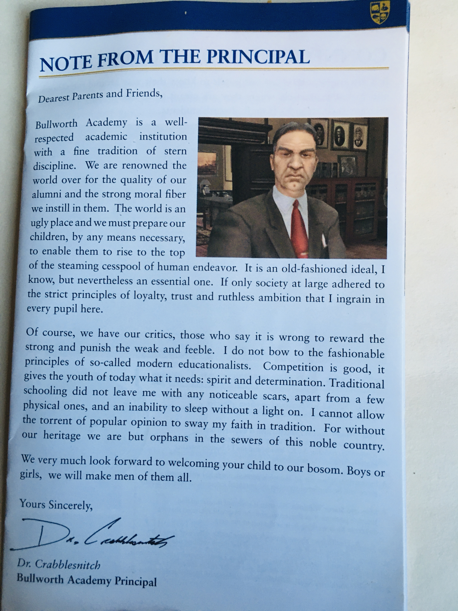

Bully's user interface elements are best described as "middling". They aren't hideous or unusable, but neither are they particularly attractive.
At the time Bully was made, UI in games weren't given the same focus as today--and it shows. Much like Bully itself, the menus function well enough, but aren't interesting enough to remember.
Why is that? Well, okay, as a rule most people don't really notice menus. But we're going to examine them anyway! Because I've noticed some things, and I think that Bully's menu could've been something special. But first, what makes it so un-special?
A Spreadsheet Documenting Your Every Action
The most glaring shortcoming of the pause menu is the avalanche of information it presents. When pausing, the menu has eight options:

We'll focus on the first three, which are nothing but information--STATS being the bulk of that dizzying outflow of stuff.
There are 350 statistics. That's a heck of a lot! Thankfully the stats aren't all in a single unbroken list... but as this gif shows, their actual presentation isn't much better:

Want to try and improve your in-game accuracy with multiple projectiles? You'll need to swap between these lists and scroll (at that constant, slow speed) all the way to the bottom each time. Fun!
It's not impossible to use the information in the menu this way. But if there is something specific you want to know, you'll need to wade through myriad irrelevant cruft to find what you want. And if you're just curious and aren't looking for anything in particular, the sheer number of things will overwhelm and make it almost impossible to find meaning in it. I know I barely looked at it when I played.
The Vibe is Not Right
What truly keeps the Bully menus down is their lack of atmosphere. Even if you removed the utterly redundant "UPGRADES" list and cut down the avalanche of factoids that 99% of players won't care about, the menus would still be boring to navigate and experience. They don't jive with the spirit of the game; being an annoying teen boy!
The vibe Bully's menus gives off is, funnily enough, expressed far more strongly in the game's manual. This 'letter' is the tone setter for all of the explanatory text in this little booklet, painting a satirical picture of official school marketing. The menus take aesthetic cues like typography and color scheme from the manual, and have murmurings of their satire too--a lot of the highly specific statistics have a tint of humor in the way that they're worded so dryly. Like having a "Times Slipped On Banana Skin" stat. Even so, it's not enough to actually be funny, so it comes off as an official school thing. ...Which is at odds with Bully's core appeal.
At its heart, Bully's core fun is getting to play the part of a rambunctious teen boy. Jimmy Hopkins isn't a customizable avatar like Commander Shepard, nor a silent protagonist like Link. Instead, he's given enough personality to let the player have fun beating people up for a while. That personality isn't deep--he doesn't like authority and is very stubborn--but because he speaks frequently during gameplay, we get a better understanding of his personality than anybody else in the game. And getting to be this angry yet confident teenager is fun!
So the menus--being an extension of your and Jimmy's actions in the game--should bolster your feeling of being this kid. Instead, they put you at a remove. Because the menus take aesthetic cues from the manual, which is styled like an official school letter, this menu codes itself an official school document. But... everything in the menus relates to Jimmy--how long he's been here, whether or not dialog in his story should have subtitles, etc. So this results in making it seem as if Bullworth Academy is, for some reason, keeping track of all of this information about Jimmy?...
Conclusion
Okay, to be fair, nobody playing the game would actually think the school is stalking them and taking notes. But the dry tone of the menus detracts from that feel of rebel-teen the rest of the game attempts to cultivate. Join me next time as I take a crack at making pause menus that even a grumpy teen boy could grudgingly admit is "alright, I guess".